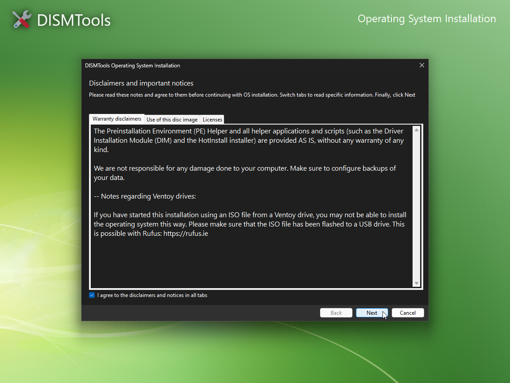

Starting local installations
You can start the installation of your operating system in 2 ways:
- By booting to installation media,
- By starting the installation from within a full Windows environment (DISMTools 0.6.1 and later), or
- By booting to the boot image of the installation disc file via the Preboot eXecution Environment (PXE) (DISMTools 0.7 and later)
In DISMTools 0.7.1 and later, performing these tasks has become much easier thanks to a new autorun application included in the root of the installation media:

Starting from a full Windows environment
DISMTools 0.6.1 and later come with a program that prepares your computer for OS installation. This is called HotInstall, and the process of computer preparation is as follows:
NOTE: HotInstall does not support Ventoy drives, due to the way they work
IMPORTANT: HotInstall WILL NOT perform an upgrade. It will only prepare your computer for a clean installation of the operating system.
-
Start
setup.exein the root of the DVD or USB drive. If you see a notification when inserting the installation media, you can also click on it to start the installer, effectively taking advantage of AutoRun:
-
Accept the disclaimers and click Next:

-
Review that the ISO file contains the installation image you want to test, and click Next. On this screen, you can also export all your third-party drivers to a folder, in case you need them later:

-
Wait for your computer to be prepared for installation. This process will take some time, depending on your computer's performance:

After restarting your computer, choose "DISMTools Operating System Installation" (if it is not selected by default) and press Enter. The first stage of the installation will start:

Selecting the disk and partition
The PE Helper will get the disks that are available on your computer:

On this screen, you can also stop for a moment to take actions if something does not look right with the disk listing, or if you want to see what disks have enough free space for the installation of your Windows image:
- If you don't see the disk you want to use, it could be because your computer uses a third-party disk controller. If that is the case, type
DIMand press Enter to open the Driver Installation Module. More information on how to use this tool can be found in the External Tools section of the documentation - (Only for installations started with HotInstall) If you want to see the free space on your disks, type
DSCRand press Enter. This will show you the Disk Space Checker report generated by HotInstall:

After selecting the disk, you will be asked to select the partition where the operating system will be installed. You can choose to clean all the partitions of your disk, or you can choose to format a specific partition:

IMPORTANT: all actions past this point are irreversible. Make sure that you have backed up your data, and that you have selected the correct disk, before proceeding.
Choosing the index of the Windows image
After selecting the disk and partition, you will be asked to choose the index of the Windows image that you want to apply. The PE Helper will show you basic index information, including the name you have given to the image:

You can also see more information about the image by typing INFO and pressing Enter:

After choosing the index, the PE Helper will apply the image to the selected disk or partition, will run serviceability tests, and will create boot files.
After everything is done, your computer will restart automatically in 10 seconds:

From this point, you can remove the installation media and let your computer finish operating system configuration.
Serviceability tests
Serviceability tests are performed during OS installation to make sure that the image that has been applied is valid. They are only run if the architectures of the PE and the image are the same, and must pass in order to successfully complete the installation of the operating system.
Windows Setup also performs serviceability tests right before the first reboot.
If these tests fail, you may need to repair the component store of your Windows image.